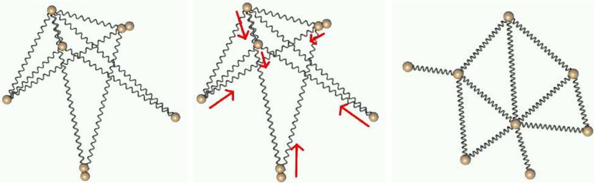

Dessiner le graphe
L'objectif de cette étape est d'implémenter un algorithme de dessin de graphe. Ces algorithmes permettent d'affecter des coordonnées aux sommets afin de construire une image lisible du graphe. Le type d'algorithme de dessin que vous allez implémenter s'appelle un algorithme par modèle de forces et simule un modèle physique où les sommets sont des objets et les arêtes des ressorts.
Avant toute chose, pour que l'application se mette à jour automatiquement alors que le graphe se dessine petit à petit, nous allons exécuter l'application graphique et l'algorithme de dessin de grpahe dans des threads différents.
Exécuter la mise à jour de l'Appli dans un thread séparé
Lancer des theads
Il existe plusieurs solutions en C++ pour lancer des threads. Nous allons utiliser la bibliothèque pthread (POSIX thread). Cette bibliothèque quoiqu'ancienne nous permettra de lancer simplement la mise à jour de la fenêtre d'afficahe (exec()).
Voici un petit exemple de code permettant de lancer l'exécution d'une fonction dans un thread séparé :
#include <pthread.h>
void * foo(void *param){ // le type de retour et du paramètre sont obligatoires
int * data = (int *) param; // on sait quel est le type réel
*data = 42;
// arrêt du thread
pthread_exit(0);
}
int main(nt argc, char *argv[]){
pthread_t th;
int i = 0;
cout << "Avant " << i << endl;
// crée le thread avec 4 parametres : le pthread_t, les paramètres du thread
// (nous n'en parlerons pas), un pointeur vers une fonction (ici, foo) et le
// paramètre de la fonction
pthread_create(&th, nullptr, foo, &i);
// indique qu'il faut attendre la fin du thread
pthread_join(th, nullptr);
cout << " 42 ? " << i << endl;
return 0;
}
Ajoutez dans le fichier main.cpp la fonction suivante :
void * miseAJourAppli(void * param);
qui reçoit un pointeur d'Appli sous la forme d'un void * et qui exécute la boucle de mise à jour de l'application.
Modifiez la fonction main afin d'exécuter cette fonction dans un thread séparé.
Compilez et exécutez.
Rendre l'Appli thread safe
Même si vous avez pu compiler et exécutez votre code, il n'est pas pour autant adapté à une exécution en parallèle des plusieurs threads.
En particulier, dans la classe Appli, nous utilisons des données pour dessiner les sommets dans la fenêtre. Or, nous allons écrire un algorithme qui va modifier ces mêmes objets graphiques. Nous allons donc faire en sorte d'interdire des accès concurrentiels aux différentes maps.
Pour cela, nous allons utiliser des mutex (MUTual EXclusion) qui permette de protéger les données en cours d'utilisation (ici, les données de l'Appli).
Pour cela, commencer par inclure pthread dans la déclaration de la classe et ajouter l'attribut suivant :
pthread_mutex_t m_mAJFormes;
Le principe de base du mutex est d'être "fermé" (lock) dès qu'on manipule des données qui sont modifiées par plusieurs threads et d'être réouvert dès que l'accès aux données est terminé :
// la méthode bar va accéder à une donnée partagée
// m_mutex est un attribut de la classe Foo
void Foo::bar(){
pthread_mutex_lock(&m_mutex);
// modification
this->m_donnee = 42;
pthread_mutex_unlock(&m_mutex)
}
Lorsqu'un thread 1 exécute cette méthode alors que le mutex est locké par un autre thread, le thread 1 va attendre que le 2ème réouvre le mutex avant de continuer l'exécution de la méthode bar (et locker lui même le mutex).
Avant d'utiliser un mutex, il faut le "configurer". Il existe deux manières de le faire :
- soit lors de l'initialisation du mutex en lui passant PTHREAD_MUTEX_INITIALIZER en paramètre
Foo::Foo() : m_mutex(PTHREAD_MUTEX_INITIALIZER) {
...
}
- soit en appelant la fonction pthread_mutex_init (après une initialisation par défaut) :
pthread_mutex_init(&m_mutex, NULL); // attend l'adresse d'un mutex et une méthode
// d'initialisation
Ajoutez l'initialisation du mutex de la classe Appli dans son constructeur et utilisez le mutex dans toutes les méthodes de la classe qui accèdent aux données utilisées par l'affichage (n'oubliez pas de réouvrir le mutex en fin de méthode).
Implémenter l'algorithme par modèle de force
Principe

Le principe des algorithmes par modèle de forces est de simuler un modèle physique masse ressort (voir la page wikipedia). Dans cette simulation, les sommets du graphe sont considérés comme des objets physiques et deux objets physiques sont reliés par un ressort si les sommets du graphe correspondants sont reliés par une arête.
Ces algorithmes suivent le schéma général suivant
Initialiser la position des sommets (aléatoirement)
Répéter n fois
Pour chaque sommet v
Calculer les forces d attractions appliquées sur le sommet v par ses voisins
Calculer les forces de répulsions appliquées sur le sommet v par tous les autres sommets
Additionner ces forces et déplacer le sommet v en fonction en conséquence
Suivant l'algorithme utilisé, le calcul des forces n'est pas le même (utilisation de différents modèles physiques). Dans ce projet, nous utiliserons le modèle suivant :
- la force d'attraction exercée sur le sommet v par un de ses voisins u est :
- la force de répulsion exercée sur le sommet v par un autre sommet u :
Où ideal est une longeur idéale d'arête, dans notre algorithme nous la fixerons à 30.
La classe ModeleDeForce
Déclarer dans un fichier ModeleDeForce.h la classe ModeleDeForce avec les méthodes et attributs suivans :
-
GrapheValue * m_g;
-
ModeleDeForce(GrapheValue *g);
-
void initialiserDessin( unsigned int largeur, unsigned int hauteur);
-
Coord calculerAttractions(const Sommet& v);
- Coord calculerRepulsions(const Sommet &v);
-
Coord calculerForces(const Sommet &v);
-
void deplacer(const Sommet &v, Coord deplacement);
- void executer();
Comme vous pouvez le remarquer, les forces (ou déplacements) exercées sont ici stockées dans des coordonnées. Nous avons implémenté de nombreux opérateurs afin de pouvoir les manipuler plus simplement (addition, soustraction, multiplication par un réel).
On souhaite aussi interdire l'instanciation par défaut d'un ModeleDeForce. Pour cela nous allons indiquer que nous souhaitons supprimer ce constructeur grace au mot-clef = delete :
ModeleDeForce() = delete;
Dans le fichier ModeleDeForce.cpp, commencez par implémenter le constructeur paramétré (qui ne fait qu'initialiser m_g) et la méthode executer qui exécute la boucle principale de l'algorithme (cf plus).
calculerForces Implémentez la méthode calculerForces qui appelle les méthode calculerAttractions et calculerRepulsions et retourne la somme de ces forces.
calculerAttractions Implémentez la méthode calculerAttractions, le principe de cette méthode est de parcourrir les voisins du sommet u passé en paramètre et pour chaque voisin de calculer la force d'attraction qu'il exerce.
Pour chaque voisin u, il faut commencer par calculer le vecteur vu comme Coord(v) - Coord(u). On peut ensuite calculer la distance dist(u, v) qui sépare les 2 sommets car il s'agit de la norme du vectur vu que l'on vient de calculer. Une fois ces deux variables calculées, il devient simple de calculer la force exercée sur v par son voisin u.
Il va falloir borner la force d'attraction exercée sur le sommet v. Nous allons réduire la "longueur" (norme) de cette force si elle excède une constante MAX_ATTRACTIVE=300 :
if(sommeAttraction.norm() > MAX_ATTRACTIVE){
sommeAttraction /= sommeAttraction.norme(); // vecteur unitaire
sommeAttraction *= MAX_ATTRACTIVE; // vecteur de norme MAX_ATTRACTIVE
}
calculerRepulsions L'idée est très similaire à la différence qu'il ne faut pas simplement parcourrir les voisins de v mais l'ensemble des sommets (différents de v) et calculer la force de répulsion que chaque sommet u exerce sur v.
NB : attention dans la formule au vecteur uv qui est l'opposé de celui des forces d'attractions.
NB : attention aux divisions par zéro
Ici aussi, il faut borner la force de répulsion retourné à une constante MAX_REPULSIVE = 60.
deplacer Implémentez la méthode déplacer qui déplace le sommet v. On va ici aussi limiter le déplacement (avant de l'appliquer) avec une variable maxDeplacement initialisée à 20 qui devra diminuer au fur et à mesure des itérations de l'algorithme.
initialiserDessin Implementez la méthode initialiserDessin qui affecte aux sommets du graphes des positions aléatoires comprises entre (0,0) et (largeur, hauteur).
Ajout d'une force de gravité Aussi afin d'améliorer la convergence de l'algorihtme, il est nécessaire d'ajouter une force de gravité. Pour cela, ajouter une méthode :
Coord calculerForceGravite(const Sommet &n);
qui calcule et retourne la force de gravité exercée sur n depuis le "centre" du dessin :
où bary est le barycentre du dessin (la somme des positions divisées par le nombre de sommets).
Ajouter une méthode exécutable dans un thread
Ajouter une méthode statique :
static void *dessiner(void *vg);
qui instancie un ModeleDeForce et exécute l'algorithme.
Modifiez le main afin d'exécuter la méthode dessiner dans un thread.
Compilez et exécutez !